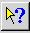
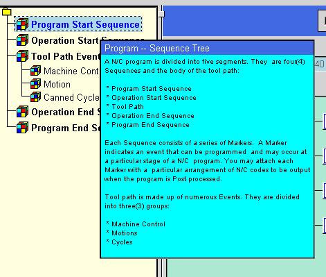

Help Functions
The buttons located on the upper right most section of the initial dialog
activate the following functions in Post Builder.
Balloon
Help
This option will activate Balloon Help. When the cursor is placed
on many of the objects in the Post Builder dialogs an icon will appear
to give more detail on the exact functionality of the object. Balloon
Help can be turned on during normal postprocessor creation mode.
This example shows the name of the block being output as well as the format
of the output code.
When Balloon Help is toggled on, it will turn to a pink background color
, when toggled off, it will return to its gray background color .
 Context
Sensitive Help
This option will activate Context Sensitive Help mode. When this
mode is active and the item is selected in Post Builder, a description
of that item will be displayed. For example, when Context Sensitive
Help mode is active and Program Start Sequence is selected the following
description is displayed. This feature is not implemented for all
dialogs and objects. When this feature is active, the dialogs will
not behave as they did in postprocessor create mode. You must turn
off Context Sensitive Help in order to return to postprocessor create mode.
The cursor will turn into a question mark during Context Sensitive Help.

When Context Sensitive Help is toggled on, it will turn to a pink background
color , when toggled
off, it will return to its gray background color .
Dialog
Sensitive Help
This option when activated will allow you to access the portion of this
documentation that pertains to the current dialog you selected in Post
Builder.
Browse
User Documentation
This option will allow you browse this document from Post Builder.